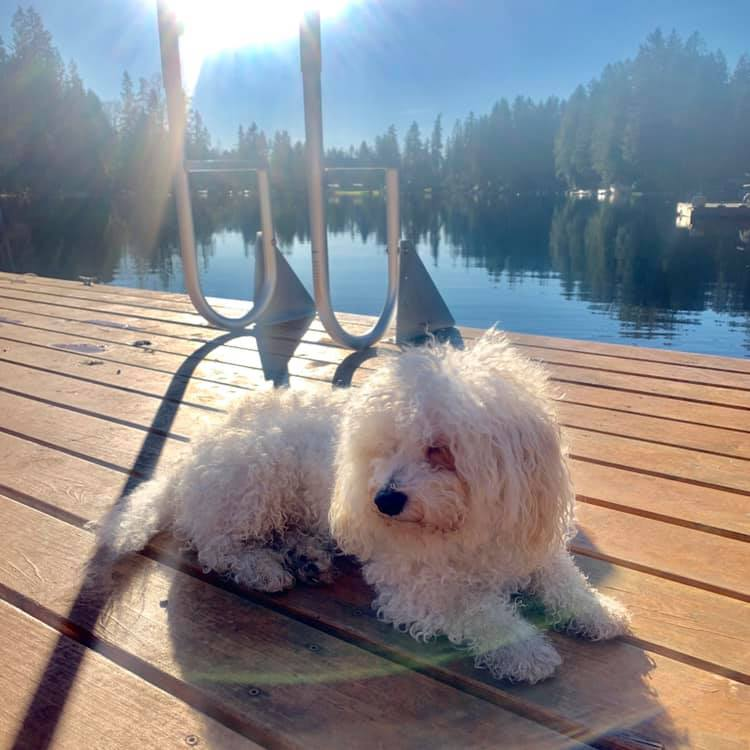

Legos
I've been a lego collector since I was around 6 years old really, and I was never the kind of kid who wanted to destroy them I just wanted to make and display sets. I've definitely kept with tradition through the years.
I'm Evan and I was born and raised right here in Seattle. I've always been interested in the computer world especially since I ended up getting my first laptop when I was around 8 years old. I have many hobbies in interests that I partake in a lot some of which include:
I've been a lego collector since I was around 6 years old really, and I was never the kind of kid who wanted to destroy them I just wanted to make and display sets. I've definitely kept with tradition through the years.

My goal right now as a running start student is to attend Western Washington and go into their Computer Science program and hopefully have a job in that field.